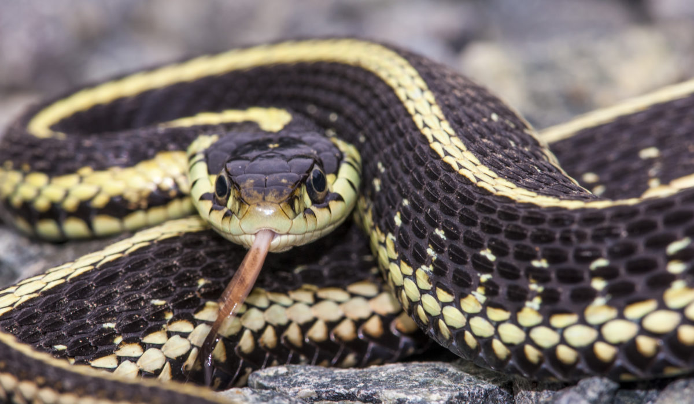
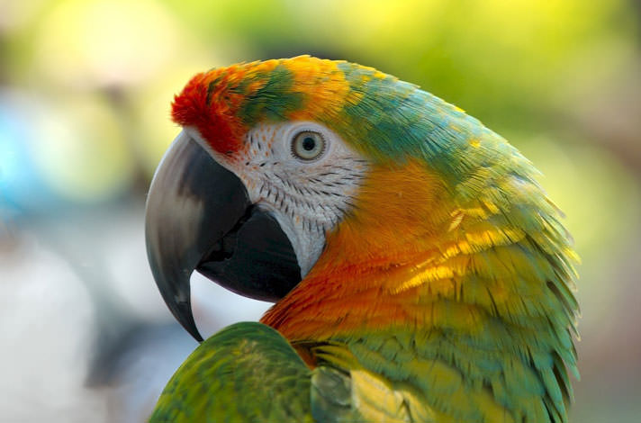
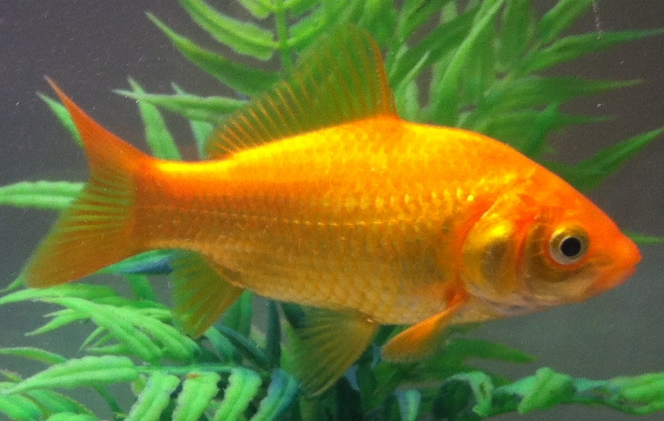
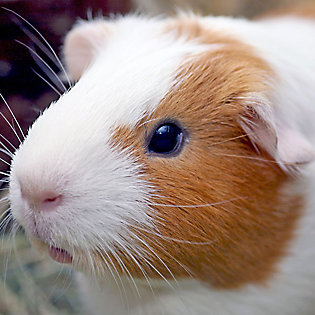
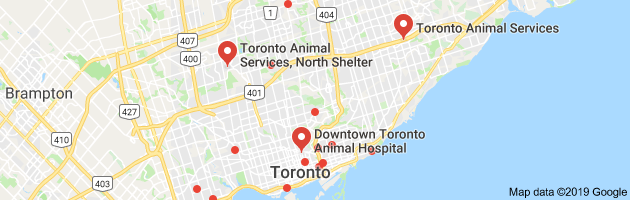

What Pet should I get?
Making a descision on getting a pet is not easy and picking one can be even harder. Luckily we have you covered.







Here is a map with locations to adopt a pet near you

Making a descision on getting a pet is not easy and picking one can be even harder. Luckily we have you covered.